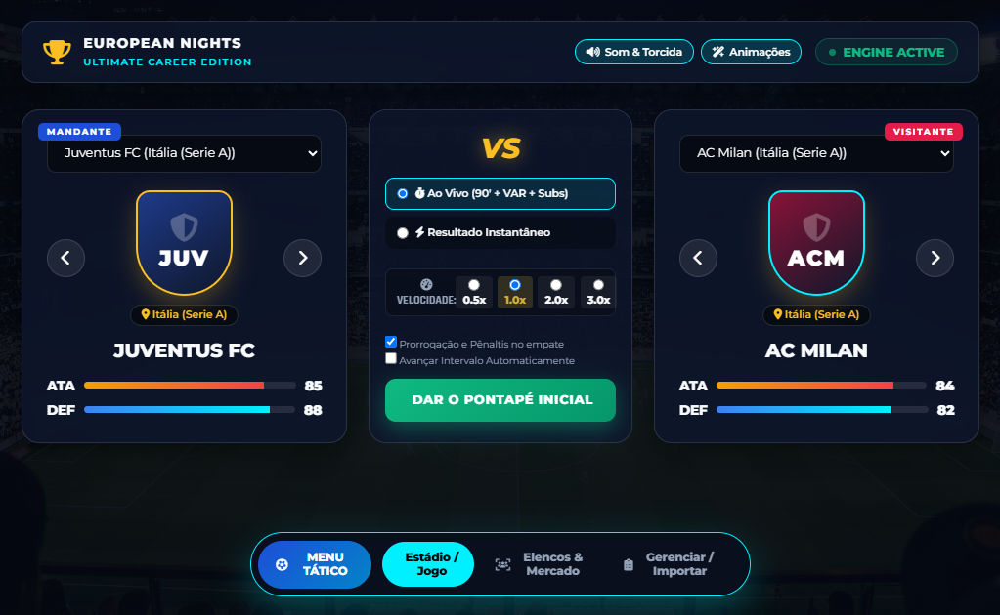

European Nights: Ultimate Career Edition
Um simulador imersivo de partidas e carreiras de futebol desenvolvido com foco em lógica de simulação em tempo real, gestão tática avançada e arquitetura de dados estruturada.
01. O Painel Tático e Motor de Simulação (Interface Principal)
A interface foi concebida para refletir a imersão de um grande ecossistema esportivo. O painel centraliza a seleção de mandantes e visitantes, controle dinâmico de velocidade de simulação e parâmetros de arbitragem ao vivo.

[ Painel principal com seleção de clubes, atributos dinâmicos (ATA/DEF) e controle de velocidade em tempo real ]
02 Arquitetura & Funcionalidades Principais
Desenvolver este simulador exigiu uma estrutura lógica robusta para processar eventos em tempo real, calcular probabilidades baseadas em atributos de equipe e manter a fluidez visual sem travamentos.
- Motor de Simulação Ao Vivo (90' + VAR + Subs): Processamento dinâmico de eventos de partidas, calculando atributos de ataque (ATA) e defesa (DEF) quadro a quadro.
- Controle de Velocidade Dinâmico: Permite ao utilizador ajustar a velocidade da simulação de 0.5x até 3.0x com atualização fluida de interface.
- Persistência com MySQL: Estrutura de banco de dados relacional projetada para guardar estados de equipas, plantéis, estatísticas de atletas e dados de carreira.
- Gestão de Elencos & Mercado: Módulos dedicados para gerir plantéis, táticas de equipa, estádios e transferências.
Lógica de Simulação & Eventos
O núcleo do motor de jogo lida com o cálculo probabilístico e o fluxo temporal das partidas:
- Cálculo de Força (ATA vs DEF): Algoritmos de balanceamento de estatísticas.
- Gatilhos de VAR e Substituições: Eventos randômicos controlados por estado.
- Gestão de Placar e Súmula: Atualização síncrona em tempo real.
Tecnologias Aplicadas
Para estruturar todo o ecossistema técnico e visual, foram empregadas ferramentas modernas:
- JavaScript (ES6+) & Node.js: Lógica central e servidor de rotas.
- MySQL: Banco de dados relacional para carreiras e elencos.
- HTML5 & CSS3: Layout responsivo com variáveis customizadas.